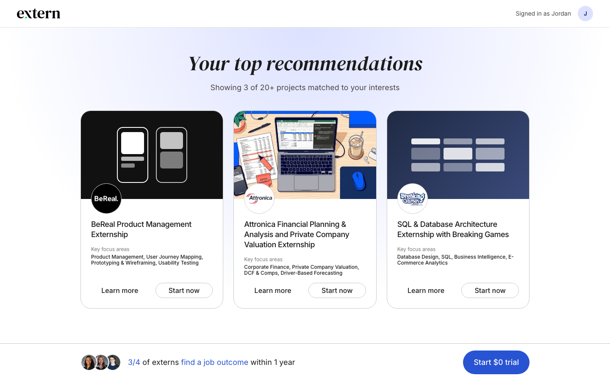
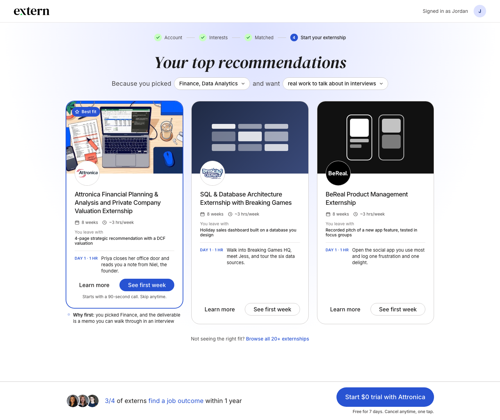
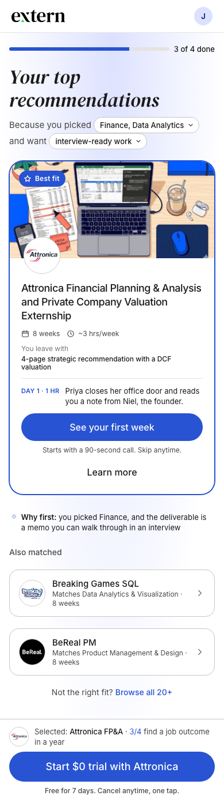
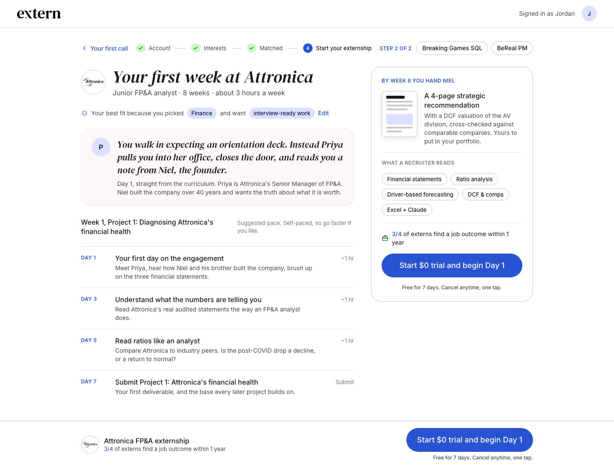
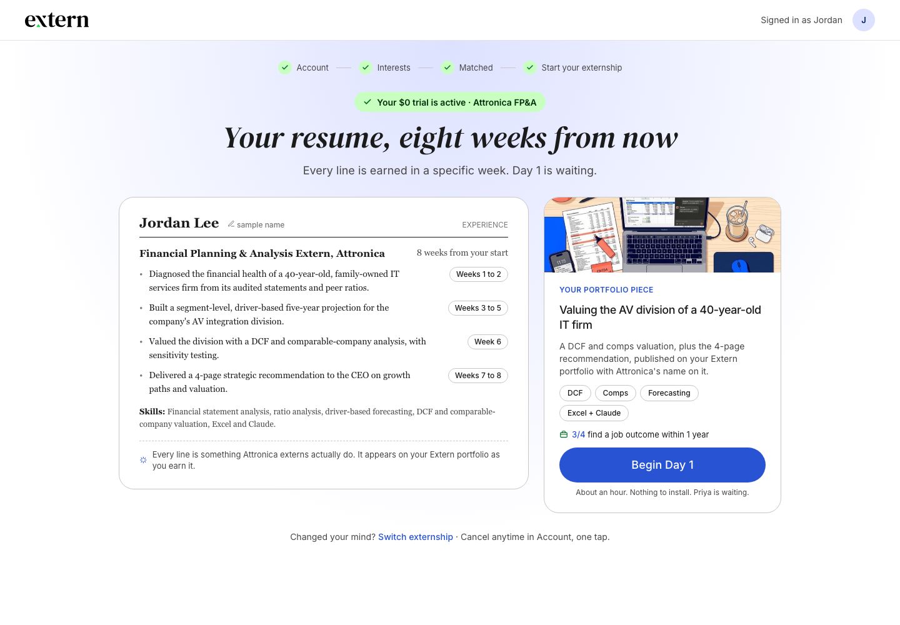
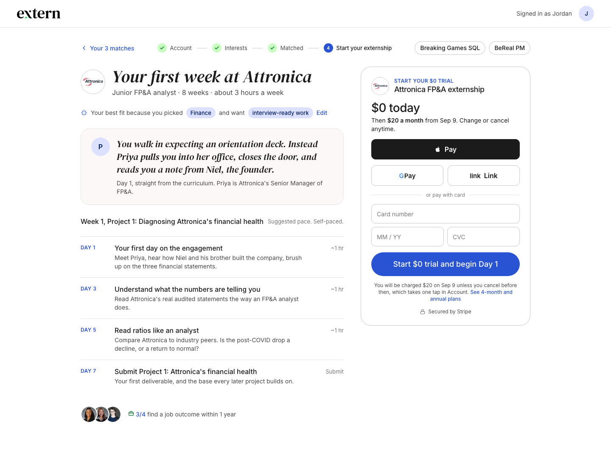

Recommendations Page Redesign
Design review draft for the post-signup page (the trial wall). Built on Extern's real tokens and real curriculum content. Mockups, not final copy. Prepared by Jay with Claude, 3 Sep 2026.
The flow, one job per screen
- Choose (board 1, plus phone). The three cards stay. The questionnaire is reflected back as two inline selectors, one card is badged Best fit with the reason under it, and every card gets a Day 1 row and a commitment button ("See first week") instead of the paywall.
- Do (board 2). The Best fit button opens a 90-second real call lifted from Day 1 of the externship, with a one-tap skip. Answer it, get the principle, move on.
- Commit (board 3). The first-week plan: Day 1 narrated from the curriculum, four real Project 1 steps, the week-8 deliverable, and the trial button.
- Who you become (board 4). The post-checkout success page: trial active, the resume as it reads eight weeks out with the week each line is earned, and one button, Begin Day 1.
A constant "$0 trial" state runs through every pre-checkout screen: the bottom bar names the selected project, and screens with a rail keep an in-context button too.
Feedback so far (Product Prioritization, 3 Sep)
- Too dense; easy to lose track of the next step. Content is not final, a design and copy pass is expected.
- Keep a constant "$0 trial" state on every pre-checkout screen. Applied: bottom bar restored on boards 2 and 3.
- One-screen checkout (appendix): separate the moment of selling from the moment of paying. Set aside; an express "buy it now" path is the variant worth testing later.
- Content source: the externship curricula, the same way Labs pulls it.
Applied from Vinny's notes (3 Sep, evening): chips header replaced by two inline selectors; the Best fit reason moved to a caption under the card; "Matches" boxes on the other cards and completer counts on all cards removed; bar microcopy shortened to "Free for 7 days. Cancel anytime, one tap." Same treatment on the phone board and in the rails.
What would help most from you: what to cut to reduce density on boards 1 to 3; whether the progress stepper and the "Because you picked" chips earn their place; copy that reads as filler; where the next step is unclear; anything off-brand versus the live product.
How each board was judged (1 to 10 on seven criteria from an onboarding research pass; criteria 1 and 4 count double)
- Something happens within 60 seconds
- Personalization is visible, not claimed
- A clear default plus legible differences
- Commitment before the wall; the CTA continues an intention
- Proof next to the CTA, specific to the project
- Honest: no overclaim, no confidential figures, works on a phone
- Extern brand fidelity, buildable with existing components
Real on every board: managers, Day 1 content, deliverables, skills, the job-outcome line already on the live page. Labeled estimates: about 3 hrs/week, the Day 1/3/5/7 pacing. Placeholders: the sample name, BeReal and Breaking Games card art.
0 · Today (baseline)
4.9 / 10360s
3person.
4default
4commit
5proof
8honest
10brand
Reproduced from the live component for comparison. The page earns the click; it does not earn a commitment that survives the plan picker.

1 · Show your work (choose)
8.1 / 10760s
9person.
9default
8commit
8proof
8honest
9brand
Cards stay. The questionnaire is reflected back as two inline selectors; one card is Best fit, with the reason as a caption under it; every card gets a Day 1 row, hours and deliverable; the primary button is a commitment step, not the paywall. The 90-second call sits behind the Best fit button with a one-tap skip.
Research: Chernev on choice defaults, the PNAS defaults meta-analysis, Coursera's 2025 single top pick with a why, Airtable and Canva on visible personalization, Nunes and Dreze on endowed progress.

1m · Show your work, phone
8.1 / 10760s
9person.
9default
8commit
8proof
8honest
9brand
Best fit first with the button; the other two collapse to rows; the sticky footer names the selected project. A large share of first-time viewers are on phones and convert below desktop.

2 · Your first call (do)
8.6 / 10960s
8person.
8default
9commit
8proof
8honest
9brand
Step 1 of 2 behind the Best fit button, with a one-tap skip. Priya's brief in her own words from the curriculum, a chart with the shape and no figures (Attronica's numbers stay behind the paywall), one real analyst call lifted from the Day 1 First Principle. Answer, get the principle, then the button leads to the first week. Two states below: question, then payoff.
Research: Bolt, Lovable and Perplexity output-before-account; Wispr Flow's guaranteed-win task ladder; Codecademy 2011; Duolingo lesson-before-signup.
3 · Your first week (commit)
8.2 / 10760s
8person.
8default
9commit
8proof
9honest
9brand
Step 2 of 2. Commit to a project, not a subscription: Day 1 narrated straight from the curriculum, four rows of real Project 1 steps with honest times, the week-8 deliverable, the skills a recruiter reads, and the trial button in the rail and the bar.
Research: Headspace's paywall after the felt session, Coursera's enroll-triggered trial, Noom and Udacity on commitment before price.

4 · After checkout: who you become
8.1 / 10860s
9person.
8default
8commit
8proof
8honest
8brand
The post-checkout success page in place of today's blank one: trial active, the resume line and portfolio piece as they would read after the externship, each line tagged with the week it is earned, and one button, Begin Day 1. Every line is something Attronica externs actually do.
Research: Hulick's "better version of yourself", seeded empty states (Linear, Grammarly, Airtable).

Appendix: considered and set aside
S1 · One screen, one default plan
8.2 / 10Replaces the plan picker with an inline checkout in the first-week rail: wallets on top, card below, monthly pre-selected, the exact charge and date on the button screen. Set aside after today's feedback that selling and paying should be separate moments; an express "buy it now" path is the variant to explore instead.